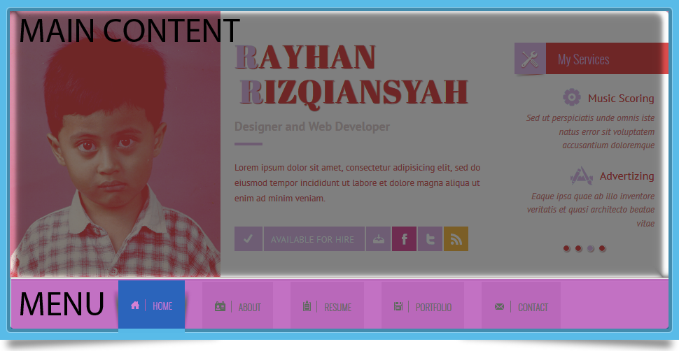
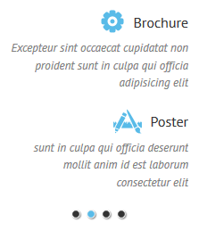
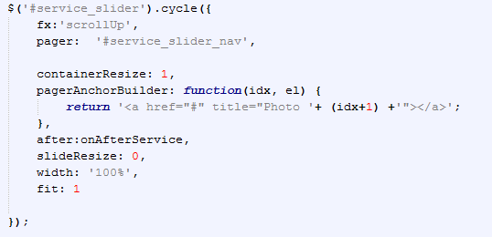
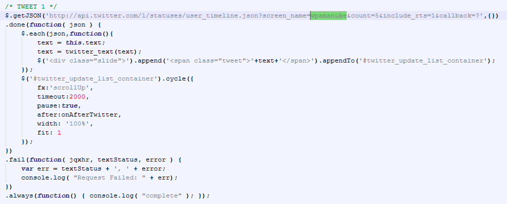
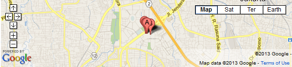
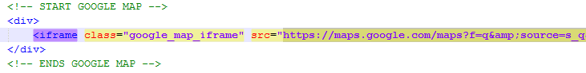
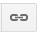
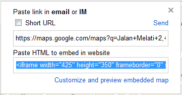
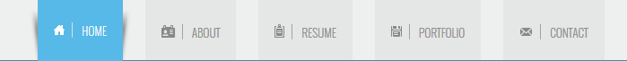
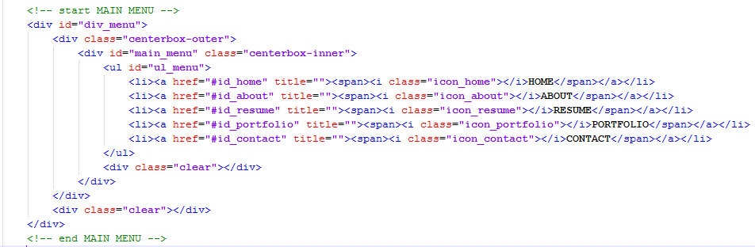

1 Introduction
Professional Resume HTML Template Vcard is responsive vcard to show your resume template online. It's design slick to make your resume online beautifull
Top
2 Email Support
Once again, We thank you for purchasing this html template. We would be glad to help you if you have any questions relating to this html template. No guarantees, but We will do best on our part to assist you in every possible way. If you have a more general question relating to the html template on ThemeForest, you might consider visiting the forums and asking your question in the "
Item Discussion" section. Thanks and Regards
wpamanuke Top
3 General Structure
The html template is just followed as the undermentioned screenshots and its descriptions. Please be sure to first see the screenshot carefully to visually understand that the desciption under it are only mentioned to control that particlar section. Also be sure that this is a general description so you can always find more detailed instructions on the screenshots (below) as you browse through this help documentations step by step. (TIP: Use left navigation to properly navigate and get detailed help on any header, main, footer, common areas etc
HTML STRUCTURE
- Main Content
- Home
- About
- Resume
- Portfolio
- Contact

CSS FILES
CSS CUSTOM
You can edit this css
- css/style.css
- css/tipTip.css
CSS EXTERNAL
- css/reset/css
- css/colorbox.css
JAVASCRIPT FILES
JAVASCRIPT CUSTOM
All script which can be manipulated is in custom.js
JAVASCRIPT EXTERNAL
- js/modernizr.js
- js/jquery.easing.1.3.js
- js/jquery.hashchange.min.js
- js/jquery.easytabs.min.js
- js/jquery.cycle.js
- js/jquery.tipTip.js
- js/jquery.validate.min.js
- js/jquery.placeholder.js
- js/jquery.colorbox-min.js
Top
3.1 Main
Here is some javascript which i think it's important to be explained on the main content .
Home - Services Slider

Code

About - Twitter Slider
Twitter Code
You can rename
wpamanuke with your own twitter username

About - Google Map

Google Map Code

To change your map , just replace src with src which you get from google map.
Here is the way :
- Open https://maps.google.com/
- Type your address and click to search
- Click Link Icon : 
- Choose the iframe : 
- Copy in notepad
- Inside iframe there is src , just copy the link and replace in the html for your google map
Top
3.2 Menu
Menu Picture

Menu Code
 Top
4 Responsive CSS
Responsive for table
Just write your css, inside the media query like this :
@media only screen and (min-width: 480px) and (max-width: 767px) {
}
Responsive for mobile
Just write your css, inside the media query like this :
@media only screen and (max-width: 479px) {
}
Top
5 PHP Files
To make the contact form work , you need to edit
contact_process.php in line 6.
$to = "youremail@yourdomain.com"; // set your email here
Top
6 Credits
- jQuery Colorbox : http://jacklmoore.com/colorbox
- jQuery Cycle : http://jquery.malsup.com/cycle/
- jQuery EasyTabs : http://os.alfajango.com/easytabs/
- jQuery tipTip : http://code.drewwilson.com/entry/tiptip-jquery-plugin
- Modernizr :http://www.modernizr.com/
Top
{kind=link}
{kind=link}
{kind=link}
{kind=link}
{kind=link}
{kind=link}
{kind=link}
{kind=link}
{kind=link}
{kind=link}
{kind=link}